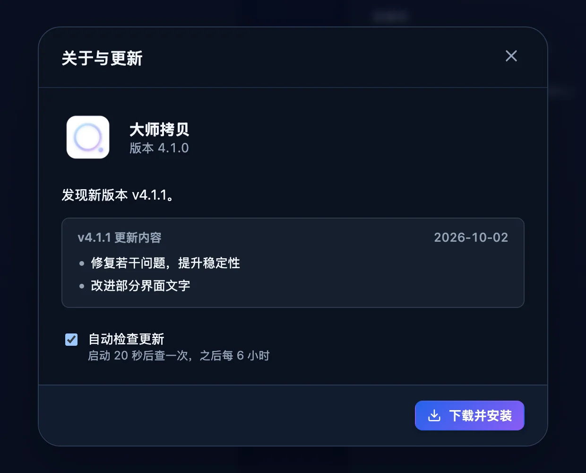
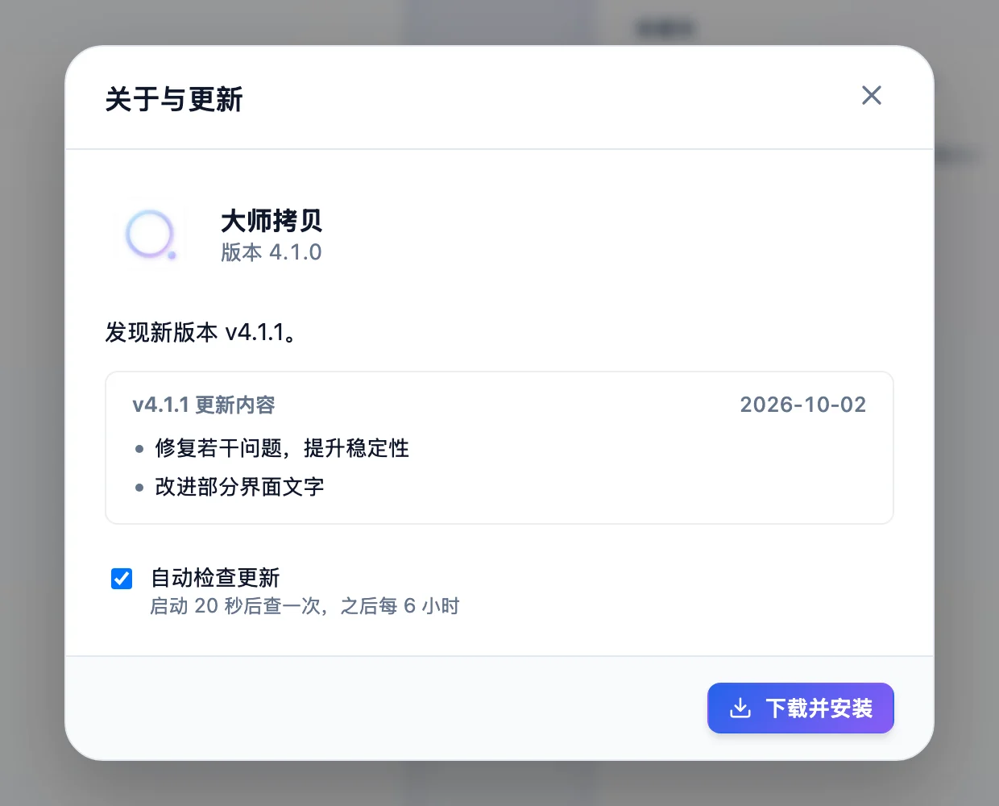

一页查全格式、默认值与快捷键
前四章讲清楚了每个功能怎么用，这一页把其中的规则和数字集中列成表：三种模式各收哪些扩展名，日期怎么定，每个按键和界面状态是什么意思，各项默认值与上限，以及装机前要准备什么。
支持的格式
三种模式共用一张格式表，各自只收其中一部分。扩展名不区分大小写，IMG_0421.CR3 与 img_0421.cr3 同样识别。表里没有的扩展名，以及当前模式不收的格式，扫描时直接略过，不会出现在结果里。
| 格式 | 类型 | 存储卡模式 | 大疆模式 | 联机拍摄 |
|---|---|---|---|---|
| JPG、JPEG | 照片 | ✓ | ✓ | ✓ |
| PNG | 照片 | ✓ | — | ✓ |
| HEIC | 照片 | ✓ | — | ✓ |
| HIF（佳能 HEIF） | 照片 | — | — | ✓ |
| NEF（尼康 RAW） | 照片 | ✓ | — | ✓ |
| CR2、CR3（佳能 RAW） | 照片 | ✓ | — | ✓ |
| ARW（索尼 RAW） | 照片 | ✓ | — | ✓ |
| DNG | 照片 | ✓ | ✓ | ✓ |
| MP4、MOV | 视频 | ✓ | ✓ | ✓ |
| AVI、M4V、3GP、MKV | 视频 | ✓ | — | ✓ |
| CRM（佳能 Cinema RAW Light） | 视频 | — | — | ✓ |
| LRF（大疆低清代理） | 视频 | — | ✓ | — |
| OSV（Osmo 360 全景视频） | 视频 | — | ✓ | — |
扫描时跳过的文件
- 隐藏文件与目录名字以
.开头的文件和目录整个跳过，包括 macOS 在存储卡上留下的._伴生文件。这条规则始终生效，没有开关。 - 缩略图目录打开 忽略缩略图文件夹 时（默认打开），跳过名字恰好是
THM，或名字里含THUMB、THMBNL的目录，大小写不限。只看目录名，普通照片文件不受影响。 - 模式外的格式例如存储卡模式下的 LRF、大疆模式下的 CR3，扫描结果里不会出现。
- 读不出的目录遍历途中有目录读取失败，整次扫描失败并提示无法完整扫描目录，不给出残缺的结果。
日期规则与归档目录
每个文件归进哪个日期目录，取决于扫描方式。所有时间都按这台 Mac 当前的本地时区换算成日期。扫描结果表的日期列显示的就是最终用来归档的时间，上传前可以先核对。
标准扫描
关闭 快速扫描模式 时按下表顺序尝试，前一步取不到才进入下一步。
| 顺序 | 来源 | 适用范围与判定 |
|---|---|---|
| 1 | EXIF 拍摄时间 | 读取 DateTimeOriginal，所有格式都先尝试。EXIF 时间不带时区，按本机时区解释。夏令时回拨导致同一时刻出现两次时取较早的一次；落在夏令时跳过的空档里视为取不到。 |
| 2 | 视频容器创建时间 | 只对 MP4、MOV、M4V、3GP、OSV、LRF，读取 moov 里 mvhd 的创建时间，支持 v0 与 v1 两种结构。早于 1970 年、或晚于当前时间 366 天以上视为无效。AVI、MKV 不走这一步。 |
| 3 | 文件修改时间 | 前两步都取不到时使用。 |
| 4 | 当前时间 | 连修改时间也读不出时兜底。 |
快速扫描与联机拍摄
| 场景 | 日期来源 | 说明 |
|---|---|---|
| 快速扫描 | 文件修改时间 | 不打开文件读 EXIF，扫描更快。每次启动应用都默认开启。 |
| 联机 · 相机 WiFi 直传 | 文件修改时间 | 也就是照片传到 Mac 的时间，不读 EXIF。 |
| 联机 · 监听文件夹 | 文件修改时间 | 监听目录里那个文件的修改时间，不读 EXIF。 |
归档目录格式
目标路径固定为 <目标目录>/YYYY-MM-DD/<原文件名>，只有一层日期目录，文件名保持原样。备份与联机拍摄用同一套格式。
/Volumes/NAS/照片备份/ ├─ 2026-08-09/ │ ├─ IMG_0409.CR3 新文件，用原名 │ ├─ IMG_0411.JPG 目标里原有的文件 │ └─ IMG_0411_1.JPG 同名不同内容，自动改名 ├─ 2026-08-10/ │ ├─ IMG_0406.JPG 内容相同，跳过 │ └─ .mascopy-4127-3.part 正在拷贝的临时文件 └─ .mascopy-inbox/ 联机 FTP 收件箱 ├─ .mascopy-staging/ 正在传输 └─ .mascopy-completed/ 已收完，等待入库
| 遇到的情况 | 结果 |
|---|---|
| 日期目录里没有同名文件 | 用原名写入。 |
| 同名，内容逐字节相同 | 跳过，不再拷贝。 |
| 同名，内容不同，已开覆盖 | 替换原名文件。 |
| 同名，内容不同，未开覆盖 | 依次试 _1、_2……每个候选名重新判断，某个候选名下内容相同也算跳过。 |
| 同一批里两个同日同名 | 例如来自两个 DCIM 子目录，第二个自动改为 _1。批内比较文件名不分大小写。 |
| 联机拍摄遇到同名 | 内容相同记为已存在，内容不同改名为 _1。联机从不覆盖。 |
快捷键
快捷键集中在 Eagle 灯箱、裁剪和弹窗里，扫描与上传界面没有专门的快捷键。文中的 Option 即 Alt 键。
| 位置 | 按键 | 作用 |
|---|---|---|
| 灯箱 | ← → | 上一张、下一张。联机时新入库的照片会实时加入翻页。 |
| 灯箱 | Enter | 进入裁剪。 |
| 灯箱 | Esc | 关闭灯箱。 |
| 裁剪中 | Enter | 裁剪并导入 Eagle。 |
| 裁剪中 | Esc | 取消裁剪，回到灯箱。 |
| 裁剪选区 | ← → ↑ ↓ | 移动选区，每次移动画面宽或高的 1%。 |
| 裁剪选区 | Option + 方向键 | 移动选区，每次 5%。 |
| 裁剪选区 | Shift + 方向键 | 调整大小：→ 加宽、← 收窄、↓ 加高、↑ 变矮，每次 1%，最小到画面的 2%。固定比例时另一条边按比例跟着变。 |
| 裁剪选区 | Option + Shift + 方向键 | 调整大小，每次 5%。 |
| 弹窗 | Esc | 关闭最上面的一层弹窗。 |
| 弹窗 | Tab、Shift + Tab | 焦点在弹窗内循环，不会跑到背后的页面；弹窗关闭后焦点回到打开它的位置。 |
鼠标操作
除了普通的点击按钮，下面这些操作不太容易从界面上直接看出来。
| 位置 | 操作 | 作用 |
|---|---|---|
| 扫描结果表 | 右键点一行 | 弹出菜单，在 Finder 中显示 定位到源文件，复制路径 复制源文件的完整路径。点菜单以外的地方、滚动、缩放窗口或切到别的应用时菜单收起。 |
| 扫描结果表 | 点整行 | 在 选择文件 模式下勾选或取消这一行。只有 将上传 和 将覆盖 且还没完成的行可以勾选。表头复选框一次勾选当前表格里所有可勾的行。 |
| 日期与后缀筛选 | 点小片 | 切换是否显示这一天或这种后缀，每组都有 全部 与 清除。开始上传 上传的是这两组筛选后的全部文件。 |
| 状态计数条 | 点某个状态 | 只过滤表格里显示的行，不改变 开始上传 的范围。 |
| 收藏夹 | 点路径 / 悬停点 × | 点路径直接选为源或目标；悬停时出现 ×，点它移除这一条。 |
| 挑图网格 | 点照片 | 打开灯箱。 |
| 联机照片流 | 点照片 | 打开灯箱。只有 已入库 和 已存在 的照片能点开，视频不进灯箱。 |
| 裁剪 | 拖动选区内部 | 整体移动选区，不改变大小。 |
| 裁剪 | 拖四个角的柄 | 以对角为锚点缩放，保持拖动开始时选区的宽高比，自由比例下也一样。 |
| 裁剪 | 拖四条边中点的柄 | 以对边为锚点只改一个方向。固定比例时另一条边跟着变，并保持原来的中心线。 |
| 裁剪 | 在选区外按下拖动 | 从按下的位置重新画一个选区。 |
| 裁剪 | 松手时选区太小 | 宽或高在屏幕上不到 24 像素时，自动恢复默认选区。 |
| 裁剪 | 点比例按钮 | 可选 自由、1:1、4:3、3:2、16:9。切换后选区拉满为该比例下最大的居中框，选自由时为整张图。 |
| 弹窗 | 点弹窗外的背景 | 关闭弹窗，与 Esc 相同。 |
界面状态
扫描结果、上传过程和联机照片流各有一套状态标签，颜色与应用里一致。
扫描结果
| 状态 | 含义 | 上传时 |
|---|---|---|
| 将上传 | 日期目录里没有这个文件名，或者已经自动改成 _1 这样的新名字。目标目录列能看到最终文件名。 | 写入新文件。 |
| 将覆盖 | 日期目录里有同名文件，内容不同，并且打开了 覆盖重复文件。 | 写完临时文件后原子替换原文件。 |
| 将跳过 | 原名或某个 _N 名字下已经有内容完全相同的文件。 | 再比对一次，仍然相同就记为已跳过，不拷贝。 |
结果页顶部的状态计数条分别用蓝、琥珀、浅灰三种颜色标出这三类的数量。开关 覆盖重复文件 后需要重新扫描，状态才会跟着变。
上传中的文件行
| 状态 | 含义 | 接下来 |
|---|---|---|
| 行内进度条 | 正在拷贝这个文件，旁边显示本文件的百分比。 | 可以暂停、继续或取消整个任务。 |
| 已完成 | 文件已写完、落盘，并以正式名字发布到日期目录。 | 之后再上传不会重复处理。 |
| 已跳过 | 扫描时判为将跳过，上传时再次比对确认内容仍然相同。 | 可以和已完成的照片一起进入挑图。 |
| 失败 | 读写出错、存储卡或 NAS 掉线、源文件在扫描后变化等。原因写进日志，弹窗显示第一条。 | 再点上传只处理没完成的文件；源文件变化的需要重新扫描。 |
联机照片
| 状态 | 含义 | 接下来 |
|---|---|---|
| 接收中 | 照片正在传入或等待写完，后面附已收到的大小。监听模式要等文件 1.2 秒不再变化才开始入库。 | 完成后自动变成已入库或已存在。 |
| 已入库 | 已按日期存进备份目标。 | 点开放大、导入 Eagle 或裁剪导入。 |
| 已存在 | 日期目录里已有内容相同的文件，没有再存一份。 | 同样可以点开挑图。 |
| 失败 | 最近一次入库没有成功，卡片带红框，鼠标悬停可看原因。 | 备份目标暂时不可写时按退避间隔自动重试，恢复后接着入库。 |
照片卡片上还可能出现两个标记：剪刀图标加数字表示裁剪导入过几次，对勾加 Eagle 表示原图已导入。这两个标记只记在内存里，重启应用或换 Eagle 连接后消失。
默认值与上限
下面的数值都写在应用里，界面上能改的已注明，其余是固定值。
扫描与备份
| 项目 | 默认值 / 上限 | 说明 |
|---|---|---|
| 覆盖重复文件 | 关 | 存储卡模式与大疆模式分别保存。 |
| 快速扫描模式 | 开 | 不保存，每次启动都恢复为开。 |
| 忽略缩略图文件夹 | 开 | 不保存，每次启动都恢复为开。 |
| 收藏夹 | 每列最多 8 条 | 新加的排最前，重复的合并。存储卡源、存储卡目标、大疆源、大疆目标各一列；联机拍摄的目标收藏沿用备份的目标收藏。 |
| 拷贝与判重 | 每次读写 1 MiB | 判重逐字节比较，比较期间两边文件都不能发生变化。 |
| 进度刷新 | 约 120 毫秒一次 | 百分比按字节计算，保留 1 位小数；暂停后重新测速。 |
| 临时文件 | .mascopy-<进程号>-<序号>.part | 写在日期目录里，权限 0600；失败或取消时自动删除。强制退出留下的，一小时后再往这个目录拷贝时自动删除。 |
| 上传任务 | 同时 1 个 | 任务进行中再发起会提示已有上传任务运行中。 |
联机拍摄
| 项目 | 默认值 / 上限 | 说明 |
|---|---|---|
| 联机方式 | 相机 WiFi 直传 | 另一种是监听文件夹。 |
| FTP 端口 | 2121 | 可改，范围 1–65535。 |
| 用户名 / 密码 | eos / eos | 可改。密码框输入时掩码显示；相机端设置提示里明文显示，方便照着填。 |
| 被动端口 | 50021–50040 | 固定，用于 FTP 数据连接。 |
| 监听地址 | 本机所有 IPv4 地址 | 界面上优先显示私网地址，自动过滤代理与虚拟网卡。 |
| 监听静默时间 | 1.2 秒 | 文件大小、修改时间和 inode 都 1.2 秒不变才拷贝，拷贝中仍在变就重新等待。 |
| 目标不可写重试 | 0.5、1、2、4、8、16 秒 | 逐次翻倍，16 秒封顶后保持每 16 秒一次，恢复后自动继续。 |
| 照片流缩略图 | 384 像素 | 滚动到可见时才加载。 |
预览、裁剪与 Eagle
| 项目 | 默认值 / 上限 | 说明 |
|---|---|---|
| 挑图网格缩略图 | 512 像素 | 滚动到可见时才加载。 |
| 灯箱预览 | 长边 2560 像素 | RAW、HEIC 由系统的 sips 转成 JPEG；JPG、PNG 直接读原图。 |
| 预览内存缓存 | 最近 12 张 | 只保存在内存里，不写缓存文件。 |
| 裁剪源图 | 全分辨率 | JPG、PNG 直接读原图，RAW、HEIC 先转成质量 95 的 JPEG，再按 EXIF 方向转正。 |
| 裁剪输出 | JPEG 质量 92 | 直接推给 Eagle，备注写明裁剪自哪个路径，不在磁盘上留裁剪文件。 |
| 默认裁剪选区 | 居中最大的 1:1 框 | 固定比例下选区太小复位时，用该比例的最大框。 |
| Eagle 地址 | http://localhost:41595 | 可在灯箱的设置区修改，只支持 http。 |
| Eagle 请求超时 | 读取 6 秒，导入 30 秒 | 首次打开灯箱时才连接 Eagle。 |
| 窗口 | 1400 × 900 | 可以自由调整大小。 |
| 主题 | 跟随系统 | 右上角三段开关可切到浅色或深色。 |
系统要求
大师拷贝只提供 macOS 版本，安装包是 .dmg。转码、推出和定位文件都调用系统自带的组件，不需要另装运行库。
| 项目 | 要求 | 说明 |
|---|---|---|
| 系统 | macOS | 其他系统没有安装包。 |
| 存储卡 | 在访达里出现为一个卷 | 读卡器插上后出现在 /Volumes 下即可。推出设备 只对 /Volumes 下的源目录有效。 |
| NAS | 先在访达里挂载为可写目录 | 例如 /Volumes/NAS/照片备份。应用不负责连接或登录 NAS，扫描前目标目录必须已经存在。 |
| Eagle | Eagle 正在运行，并开启本地 API | 设了令牌时，到 Eagle → 偏好设置 → 开发者 复制，填进灯箱设置区的 Token 栏。 |
| 联机 · WiFi 直传 | 相机与 Mac 在同一局域网 | 相机端协议选普通 FTP，不选 FTPS 或 SFTP，并启用被动模式。第一次开始会话时 macOS 若弹出防火墙提示，选 允许；另装了防火墙的，放行 2121 与 50021–50040。建议用 5GHz 网络。 |
| 联机 · 监听文件夹 | 照片先存进本机可读的文件夹 | 通常是 EOS Utility 的保存目标文件夹。监听目录与备份目标不能相同，也不能互相包含。 |
依赖的系统组件
| 组件 | 用途 |
|---|---|
/usr/bin/sips | RAW、HEIC 的灯箱预览，挑图网格与联机照片流的缩略图，裁剪前把 RAW 转成全尺寸 JPEG。 |
diskutil eject | 备份完成弹窗里的 推出设备。 |
open -R | 扫描结果右键菜单的 在 Finder 中显示。 |
renamex_np | 以 RENAME_EXCL 方式发布新文件：目标位置已有同名文件时直接失败，不会盖过去。 |
第一次打开
安装包在本机构建，只做了临时签名（ad-hoc），没有经过 Apple 公证。第一次打开时 macOS 会提示无法验证开发者，用下面任一方法放行一次，以后正常双击即可。
- 把大师拷贝拖进 应用程序 后先双击打开一次，出现提示后关掉它。
- 打开 系统设置 → 隐私与安全性，在页面底部找到关于大师拷贝的提示，点 仍要打开，再按提示确认。
也可以在终端里去掉下载隔离标记，效果相同：
$ xattr -dr com.apple.quarantine /Applications/大师拷贝.app应用内更新
4.1.0 起，大师拷贝可以在应用里更新自己。入口在标题栏右侧、主题开关左边的 ⓘ 按钮，点开是 关于与更新：显示当前版本，可以手动检查更新；有新版时列出更新内容，点 下载并安装，装好后点 立即重启。


| 标题栏入口 | 含义 |
|---|---|
| ⓘ | 没有待处理的更新。 |
| 新版本 | 自动或手动检查发现了新版本，点开看更新内容。 |
| 42% | 正在下载，数字是下载进度；之后短暂显示 安装中。 |
| 重启更新 | 新版本已装好，重启后生效。 |
- 自动检查启动 20 秒后查一次，之后每 6 小时查一次，Mac 睡眠醒来后会补上。弹窗里取消勾选 自动检查更新 就不再自动查，手动检查不受影响。自动检查失败时不打扰，手动检查失败会写明原因。
- 签名更新包带签名，大师拷贝只接受用它自己的密钥签过的包。签名对不上就停止安装，当前版本原样保留。
- 重启下载和安装期间可以照常使用。拷贝或联机会话进行中，立即重启 不能点，等它们结束再重启。重启是先退出，再重新打开。
- 位置更新会原地替换应用。直接在 .dmg 里打开的大师拷贝没法更新，先把它拖进 应用程序。
配置文件
所有设置改动后立即自动保存，界面上没有保存按钮。
| 项目 | 内容 |
|---|---|
| 位置 | ~/Library/Application Support/com.mascopy.mascopy/config.json |
| 权限 | 目录 0700、文件 0600，只有当前用户能读写。已有的文件在读取时也会收紧到这个权限。 |
| 写入方式 | 先写临时文件再原子替换，不会留下写了一半的配置。 |
| 旧版迁移 | 新位置还没有配置、但存在 ~/.mascopy-config.json 时，读入旧文件并写到新位置，旧文件留在原处。缺少的字段按默认值补齐。 |
| 主题 | 不在配置文件里，保存在应用的本地存储键 mascopy.theme，取值 system、light、dark。 |
文件内容
| 分组 | 字段 | 含义 |
|---|---|---|
sd、dji | source_dir、target_dir、overwrite_duplicates | 两种备份模式各自的源目录、目标目录和覆盖开关。 |
favorites | sd_sources、sd_targets、dji_sources、dji_targets | 四列收藏夹。dji_sources 的每一条带 path 与 device_type。 |
eagle | base_url、token、last_folder_id | Eagle 地址、令牌、上次选的目标文件夹。 |
tether | mode、watch_dir、target_dir | 联机方式（ftp 或 watch）、监听目录、备份目标。 |
tether | ftp_port、ftp_user、ftp_pass | FTP 端口、用户名、密码。 |
tether | delete_source | 旧版的入库后删除来源文件选项，已作废。界面始终写入 false，监听模式下后端也会拒绝删除。 |
快速扫描与忽略缩略图两个开关、日志、联机会话的照片列表、Eagle 的已导入与裁剪标记，都只在本次运行期间存在，不写进任何文件。
版本历史
- v1.02025 年 4 月。PyQt 写的照片 / 视频 NAS 上传工具，按日期归类，上传前先预扫描。1.0.1 增加 DNG 与 CR3。
- v2.02025 年 8 月。改用 Electron 重写，2.0.1 增加 DJI 模式。
- v2.22025 年 9 月。增加快速扫描，应用名从 MasCopy 改为大师拷贝；2.2.x 修正了时区导致的日期错误。
- v3.02026 年 1 月。用 Tauri、Rust 与 Vue 3 重写，增加收藏夹。3.0.3 与 3.0.4 增加日期与后缀筛选、推出设备、深色主题、Finder 右键菜单、忽略缩略图目录和应用内提示弹窗。
- v4.02026 年 8 月打了标签，没有单独发布安装包，内容并入 4.0.1。分块拷贝，支持暂停、继续、取消；临时文件原子发布；勾选部分文件上传；目标路径校验；Eagle 挑图与裁剪导入；联机拍摄（相机 WiFi 直传与监听文件夹）。之后又修正了 FTP 传输完成的判定，加入浅色、深色、跟随系统三段主题开关。
- v4.0.12026 年 9 月发布，4.0 之后第一个正式安装包，从这一版起在本站下载。在 4.0 的基础上：同名文件逐字节比较内容；视频按容器里的创建时间归档；FTP 收件箱分暂存与已完成两段提交，重启后继续入库；监听模式不再删除来源文件；收紧内容安全策略与配置文件权限；错误信息里隐藏 Eagle 令牌；FTP 密码输入时掩码显示；灯箱打开后直接可用方向键翻页；强制退出留下的临时文件会自动清理；若干无障碍改进。
- v4.1.02026 年 9 月。新增 应用内更新：标题栏右侧的「关于与更新」可以检查、下载并安装新版本，启动后与每 6 小时自动检查。